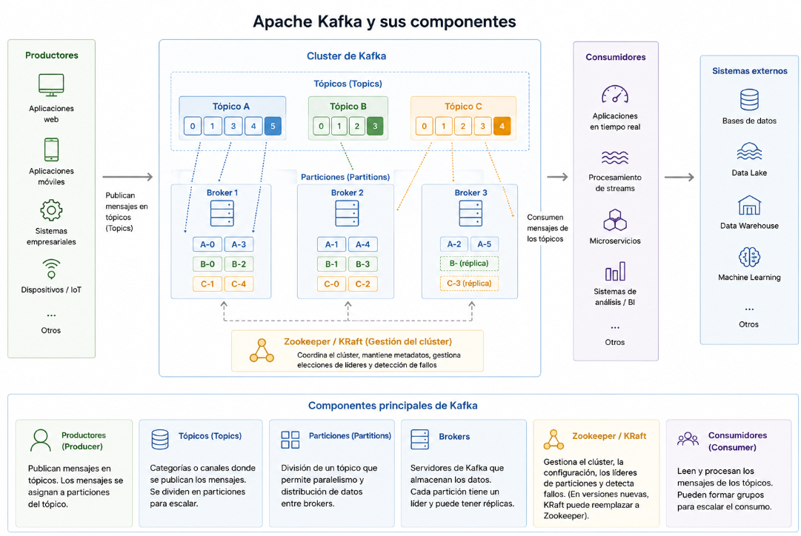

Introducción a Kafka
INTRODUCCIÓN
Apache Kafka es una plataforma distribuida de mensajería y streaming diseñada para manejar grandes volúmenes de datos en tiempo real de forma escalable y tolerante a fallos. Se utiliza comúnmente como sistema de ingesta y transporte de eventos en arquitecturas modernas de datos.
Kafka permite desacoplar productores y consumidores de datos, garantizando alta disponibilidad, persistencia de eventos y procesamiento distribuido.
CONTENIDO
Conceptos fundamentales
Apache Kafka es una plataforma distribuida de procesamiento de eventos y mensajería diseñada para gestionar grandes volúmenes de datos en tiempo real. Su principal objetivo es permitir la transmisión, almacenamiento y procesamiento de flujos de información de manera rápida, escalable y tolerante a fallos.
Kafka funciona mediante un sistema basado en productores y consumidores. Los productores envían mensajes o eventos a diferentes canales llamados topics, mientras que los consumidores leen y procesan esa información según las necesidades de la aplicación.
La arquitectura de Apache Kafka se compone de varios elementos principales:
- Brokers: servidores encargados de almacenar y distribuir los mensajes dentro del clúster.
- Topicos (Topics): canales donde se organizan los eventos o mensajes.
- Productores: aplicaciones que envían datos a Kafka.
- Consumidores: aplicaciones que leen y procesan los datos almacenados.
- Zookeeper o KRaft: sistemas utilizados para coordinar y gestionar el clúster.

Imagen 1: Arquitectura de Apache Kafka
Una de las principales características de Apache Kafka es su capacidad para procesar datos en tiempo real con baja latencia. Además, permite escalar horizontalmente distribuyendo la carga entre múltiples servidores.
Kafka también ofrece tolerancia a fallos gracias a la replicación de datos entre diferentes brokers. Esto garantiza que la información permanezca disponible incluso si alguno de los servidores falla.
En muchos entornos Big Data, Apache Kafka se utiliza como sistema central de comunicación entre aplicaciones, plataformas de análisis, motores de streaming y sistemas de almacenamiento. Tecnologías como Apache Spark, Flink o Hadoop suelen integrarse con Kafka para procesar grandes flujos de datos en tiempo real.
Apache Kafka es ampliamente utilizado en sectores como banca, comercio electrónico, monitorización de sistemas, IoT, análisis de logs y plataformas de recomendación, donde se requiere una gestión eficiente y continua de eventos.
Modelo de almacenamiento
Kafka almacena mensajes en disco de forma secuencial, lo que permite alto rendimiento incluso con grandes volúmenes de datos.
Los datos se conservan durante un tiempo determinado o hasta alcanzar un tamaño límite, independientemente de si han sido consumidos.
Garantías de entrega
- At-most-once: puede perder mensajes.
- At-least-once: puede duplicar mensajes.
- Exactly-once: evita duplicaciones (requiere configuración específica).
Kafka y procesamiento en tiempo real
Kafka suele actuar como sistema de mensajería intermedio entre aplicaciones y motores de procesamiento como Spark Structured Streaming.
En una arquitectura típica:
- Aplicaciones generan eventos.
- Kafka almacena y distribuye los eventos.
- Un motor de streaming procesa los eventos en tiempo real.
- Los resultados se almacenan en bases de datos o data lakes.
Ejemplo conceptual de flujo con Spark
spark.readStream
.format("kafka")
.option("kafka.bootstrap.servers", "localhost:9092")
.option("subscribe", "mi_topic")
.load()Casos de uso habituales
- Streaming de logs.
- Ingesta de eventos de aplicaciones web.
- Procesamiento financiero en tiempo real.
- IoT y sensores.
- Integración entre microservicios.
Ventajas frente a sistemas tradicionales de mensajería
- Mayor rendimiento.
- Persistencia de mensajes.
- Escalabilidad horizontal sencilla.
- Reprocesamiento de datos históricos.
Retos y consideraciones
- Gestión de particiones y replicación.
- Monitorización del clúster.
- Configuración adecuada de retención.
- Gestión de offsets y commits.
CONCLUSIÓN
Apache Kafka es una pieza fundamental en arquitecturas modernas de datos, actuando como backbone de eventos en tiempo real.
Su integración con motores como Spark permite construir pipelines escalables y resilientes para procesamiento continuo de grandes volúmenes de datos.